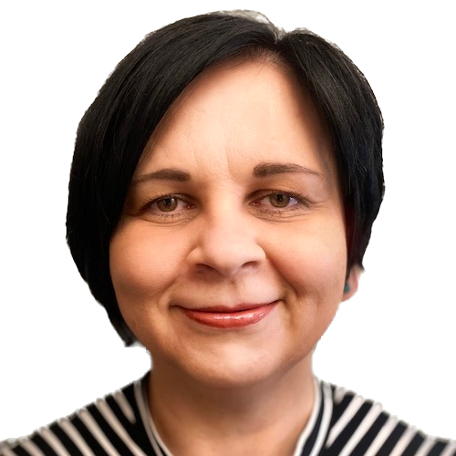

Daniel Ševčovič | FMFI dean
Daniel Ševčovič is a Professor of Mathematics at Comenius University in Bratislava. His research interests are focused on applications of qualitative and quantitative methods for partial differential equations in various applied subjects including, in particular, motion of phase interfaces and mathematical theory of pricing financial securities, spectral graph theory and nonlinear optimization. He wrote more than 100 scientific papers and seven text books and book chapters. He is a member of the Learned Society of Slovakia. Since 2019 he serves as a Dean of faculty of Mathematics, Physics and Informatics of Comenius University Bratislava.
Tatiana Jajcayová | DAI head
Tatiana Jajcayová is the chair of the Department of Applied Informatics at the Faculty of Mathematics, Physics, and Informatics Comenius University Bratislava. She received her doctoral degree in mathematics and computer science at the University of Nebraska-Lincoln, USA. Before joining DAI, she worked at Indiana State University and Rose-Hulman Institute of Technology in the USA. Apart from her role as faculty representative in the organization Informatics Europe, she is a member of the Steering Committee of the European Science Foundation programme AutoMathA, a member of the Organizing Committee of the Mathematical Cryptography Consortium and an assessor for several professional journals and conferences such as AMUC, EuroComb, UMJ, Sofsem, Journal of Algebra or MathSciNet.
Igor Farkaš | TERAIS principal investigator
Igor Farkaš is a professor at the Faculty of Mathematics, Physics, and Informatics of Comenius University Bratislava, where he coordinates the Center for Cognitive Science and supervises the international interdisciplinary master's degree program in cognitive science. He specializes in the research field of AI and cognitive science. He has been investigating the computational properties of artificial neural network models and their applications (e.g. natural language acquisition, cognitive robotics).
His research interests also include reinforcement learning, intrinsic motivation and abstraction in cognition. He worked in the USA (Fulbright Fellowship and as a postdoc) and Germany (Humboldt Fellowship). He serves as a board member of European Neural Network Society. He was a Scientist of the Year 2023 in category Personality of international cooperation, and also received the ESET Science Award 2024 in the category Outstanding academic in Slovakia.
Angelo Cangelosi | University of Manchester
Angelo Cangelosi is Professor of Machine Learning and Robotics at the University of Manchester (UK) and co-director and founder of the Manchester Centre for Robotics and AI. He was awarded a European Research Council (ERC Advanced) project in 2023. Cangelosi also is Turing Fellow at the Alan Turing Institute London, and Visiting Professor at Universita' Cattolica Milano and Hohai University.
His research interests are in cognitive and developmental robotics, neural networks, language grounding, human robot-interaction and trust, and robot companions for health and social care.
Abstract
Cognitive developmental robotics aims to develop robots capable of human-like learning, interaction, and behavior by grounding concrete and abstract concepts in sensorimotor experiences and social interactions. This talk introduced examples on language grounding in cognitive developmental robotics, and explores how principles like “starting small”, “embodied intelligence” and “super-embodiment” can address the limitations of AI tools, such as large language models (LLMs), which rely heavily on large datasets and lack sensorimotor grounding. By integrating incremental, multimodal learning and redefining embodiment to encompass physical, mental, and social processes, we can enable robots to better understand and utilize abstract concepts. The talk also reflects on the pros and cons of using foundation models in cognitive robotics.
Giulio Sandini | IIT
Giulio Sandini is Founding Director the Italian Institute of Technology and full professor of bioengineering at the University of Genoa. After graduating in Electronic Engineering (Bioengineering) at the University of Genova he was research fellow and assistant professor at the Scuola Normale Superiore in Pisa until 1984. During this period, working at the Laboratorio di Neurofisiologia of the CNR, he investigated aspects of visual processing at the level of single neurons as well as aspects of visual perception in human adults and children. He has been Visiting Research Associate at the Department of Neurology of the Harvard Medical School in Boston where he developed diagnostic techniques based on brain electrical activity mapping.
Since July 2006 Giulio Sandini has been appointed Director of Research at the Italian Institute of Technology where he has established and is currently directing the Robotics, Brain and Cognitive Sciences Unit at IIT. Prof. Giulio Sandini serves as the Networking Lead Expert of the TERAIS project.
Cornelius Weber | UHAM
Cornelius Weber graduated in physics at Universität Bielefeld, Germany, and received his PhD in computer science at Technische Universität Berlin. Following positions were a Postdoctoral Fellow in Brain and Cognitive Sciences, University of Rochester, USA; Research Scientist in Hybrid Intelligent Systems, University of Sunderland, UK; Junior Fellow at the Frankfurt Institute for Advanced Studies, Germany.
Currently he is the Lab Manager at Knowledge Technology, Universität Hamburg. His interests are in computational neuroscience, development of visual feature detectors, neural models of representations and transformations, reinforcement learning and robot control, grounded language learning, human-robot interaction, and related applications in social assistive robotics.
Igor Farkaš | UKBA
Igor Farkaš is a professor at the Faculty of Mathematics, Physics, and Informatics of Comenius University Bratislava, where he coordinates the Center for Cognitive Science and supervises the international interdisciplinary master's degree program in cognitive science. He specializes in the research field of AI and cognitive science. He has been investigating the computational properties of artificial neural network models and their applications (e.g. natural language acquisition, cognitive robotics).
His research interests also include reinforcement learning, intrinsic motivation and abstraction in cognition. He worked in the USA (Fulbright Fellowship and as a postdoc) and Germany (Humboldt Fellowship). He serves as a board member of European Neural Network Society. He was a Scientist of the Year 2023 in category Personality of international cooperation, and also received the ESET Science Award 2024 in the category Outstanding academic in Slovakia.
Abstract
The strategic approach of the TERAIS research component is based on a multidisciplinary, goal-oriented methodology to drive the development of AI-powered humanoid robots capable of advanced human-robot interaction (HRI). Research part of TERAIS focuses on AI and how it can be applied to (mainly humanoid) robots, enabling them to seamlessly interact with humans. HRI requires that robots be trustworthy, that is, transparent in their behavior (explainable), as well as being able to understand human behavior (human-aware). In the project, we focus on these pillars by diving into HRI experimental methods, as well as cognitive robotics methods based on machine learning (mainly neural networks).
Cornelius Weber | UHAM
Cornelius Weber graduated in physics at Universität Bielefeld, Germany, and received his PhD in computer science at Technische Universität Berlin. Following positions were a Postdoctoral Fellow in Brain and Cognitive Sciences, University of Rochester, USA; Research Scientist in Hybrid Intelligent Systems, University of Sunderland, UK; Junior Fellow at the Frankfurt Institute for Advanced Studies, Germany.
Currently he is the Lab Manager at Knowledge Technology, Universität Hamburg. His interests are in computational neuroscience, development of visual feature detectors, neural models of representations and transformations, reinforcement learning and robot control, grounded language learning, human-robot interaction, and related applications in social assistive robotics.
Fredrik Heintz | Linköping University
Fredrik Heintz is a Professor of Computer Science at Linköping University, Sweden, where he leads the Reasoning and Learning lab within the AIICS division. His research focuses on AI, particularly Trustworthy AI, autonomous systems, stream reasoning, and the interface between knowledge representation and machine learning. He is the Coordinator of the H2020 TAILOR network, Director of WASP-ED and the WASP Graduate School with over 120 PhD students, and President of the Swedish AI Society (SAIS). He has contributed to European AI policy as a member of the EC High-Level Expert Group on AI. He is also deeply engaged in AI education, from university curricula to promoting computer science in primary and secondary schools. He designed the 5-year engineering program in software engineering (Civilingenjör Mjukvaruteknik) and was Local Arrangements Chair for IJCAI-ECAI-18 in Stockholm.
Abstract
Europe has taken a clear stand that we want AI, but we do not want just any AI. We want AI that we can trust. This talk presents ongoing research from the EU project TrustLLM which has the goal of developing more factual and trustworthy large language models. To achieve the ambitious objectives of this project, TrustLLM tackles the full range of challenges of LLM development, from ensuring sufficient quality and quantity of multilingual training data, to sustainable efficiency and effectiveness of model training, to enhancements and refinements for factual correctness, transparency, and trustworthiness, to a suite of holistic evaluation benchmarks validating the multi-dimensional objectives.
Tatiana Jajcayová | DAI UKBA
Tatiana Jajcayová is the chair of the Department of Applied Informatics at the Faculty of Mathematics, Physics, and Informatics Comenius University Bratislava. She received her doctoral degree in mathematics and computer science at the University of Nebraska-Lincoln, USA. Before joining DAI, she worked at Indiana State University and Rose-Hulman Institute of Technology in the USA. Apart from her role as faculty representative in the organization Informatics Europe, she is a member of the Steering Committee of the European Science Foundation programme AutoMathA, a member of the Organizing Committee of the Mathematical Cryptography Consortium and an assessor for several professional journals and conferences such as AMUC, EuroComb, UMJ, Sofsem, Journal of Algebra or MathSciNet.
Fredrik Heintz | Linköping University
Fredrik Heintz is a Professor of Computer Science at Linköping University, Sweden, where he leads the Reasoning and Learning lab within the AIICS division. His research focuses on AI, particularly Trustworthy AI, autonomous systems, stream reasoning, and the interface between knowledge representation and machine learning. He is the Coordinator of the H2020 TAILOR network, Director of WASP-ED and the WASP Graduate School with over 120 PhD students, and President of the Swedish AI Society (SAIS). He has contributed to European AI policy as a member of the EC High-Level Expert Group on AI. He is also deeply engaged in AI education, from university curricula to promoting computer science in primary and secondary schools. He designed the 5-year engineering program in software engineering (Civilingenjör Mjukvaruteknik) and was Local Arrangements Chair for IJCAI-ECAI-18 in Stockholm.
Alessandra Sciutti | IIT
Dr. Alessandra Sciutti is the head of the CONTACT (COgNiTive Architecture for Collaborative Technologies) Unit of the Italian Institute of Technology (IIT). After a master’s degree in Bioengineering from the University of Genova and a Ph.D. in Humanoid Technologies, she spent two research periods abroad, first at the Robotics Lab of the Rehabilitation Institute of Chicago (USA) and then at the Emergent Robotics Laboratory of Osaka University (Japan). In 2018 she was awarded an ERC Starting Grant, for the project wHiSPER, focused on the investigation of shared perception between humans and robots. She published more than 100 papers in international journals and conferences and is currently Associate Editor for several journals on Cognitive Robotics and Human-Robot Interaction. She is the corresponding co-chair of the Technical Committee on Cognitive Robotics of the IEEE Robotics and Automation Society and a Scholar of the ELLIS Society. Sciutti received many awards, such as the title Tecnovisionarie (2021) and a recognition by Fortune Italy (2022) for her research in Robotics and AI. The scientific aim of her research is to investigate the sensory, motor, and cognitive mechanisms underlying human social interaction, with the technological goal of developing robots able to establish mutual understanding with humans.
Zuzana Lisoňová | UKBA project office
Zuzana Lisoňová is currently Head of Research Projects Office at the Comenius University Bratislava. Her management record includes projects funded from Horizon Europe, H2020 (e.g. SWAFS actions ENLIGHT-RISE, EQUAL4EUROPE), Europe for Citizens, European Structural and Investment Funds as well as other various international projects and national projects supported by Slovak research agencies. She also managed a major project "ACCORD: Advancing University Capacity and Competence in Research, Development and Innovation" devoted to modernising research and teaching infrastructures in STEM and strengthening academia-industry cooperation (OP Research and Innovation- ERDF; 67 mil. Euros). She has taken active part in key university projects as preparing and implementing the first Gender Equality Plan, receiving HR Excellence in Research award and establishing Doctoral School. She also provides training in research/project management and impact.
Her previous work experience includes the qualitative analysis researcher in EU studies at the Political Science Department at Comenius University Bratislava and project coordinator/researcher in think-tank the Slovak Foreign Policy Association, through which she has rich experience in engagement with stakeholders and public in various forms, development aid and democratization.
Igor Farkaš | UKBA
Igor Farkaš is a professor at the Faculty of Mathematics, Physics, and Informatics of Comenius University Bratislava, where he coordinates the Center for Cognitive Science and supervises the international interdisciplinary master's degree program in cognitive science. He specializes in the research field of AI and cognitive science. He has been investigating the computational properties of artificial neural network models and their applications (e.g. natural language acquisition, cognitive robotics).
His research interests also include reinforcement learning, intrinsic motivation and abstraction in cognition. He worked in the USA (Fulbright Fellowship and as a postdoc) and Germany (Humboldt Fellowship). He serves as a board member of European Neural Network Society. He was a Scientist of the Year 2023 in category Personality of international cooperation, and also received the ESET Science Award 2024 in the category Outstanding academic in Slovakia.
Daniela Olejárová | UKBA
Daniela holds MA in psychology from the Comenius University Bratislava, Slovakia and PhD from the Masaryk University in Brno, Czech Republic. Her previous international academic affiliation comprise also University of Hartford, USA (Fulbright program); William Davidson Institute/University of Michigan (Strategic Management Program - Teeter scholarship) and Blaise Pascal University at Clermont-Ferrand, France. She is an experienced project manager and consultant with more than 15 years of practice in supervising and facilitating preparation and implementation of R&D, advisory and international cooperation projects, including those funded from the EU funds. In addition, she participated in several projects focusing on innovation (e.g., open innovation, social innovation, regional innovation systems), socio-economic development (e.g., labour market, skills, microfinance, social capital, impact measurement, social enterprises) and international collaboration in the CEE region (namely Montenegro, Serbia, Croatia, Romania, Bulgaria and Russia).
She is an active supporter of developing connections and collaboration among different sectors. To date, she has served as a consultant for institutions of the EU, Slovak central and regional government, UNDP and currently also PwC in Slovakia. Within the TERAIS project she serves as the leader of WP6 Project Management.
Abstract
To achieve excellence at an international scale, higher education institutions need to leverage effective models for support and organization of research. TERAIS tapped into this through a number of initiatives at the Department of Applied Informatics (DAI) aimed at restructuring of the research groups, development of a Research Support Unit, launch of a career development system for academic staff or introduction of a systematic support for internationalization and communication. Tatiana Jajcayova, associate professor serving as the DAI Chair, will share her insights from a three year-long journey of transformations. Discussion with other panelists will focus on comparing and contrasting experience from research settings in Sweden, Italy and Slovakia. During our discourse, we will aim to pinpoint approaches and models that could be inspirational for other Slovak academic workplaces.
Fabrizio Tubertini | IIT
Fabrizio Tubertini is the Head of Industrial Innovation at the Istituto Italiano di Tecnologia (IIT), Genova – Italy, where he drives the institute’s efforts to connect cutting-edge research with the industrial sector. Operating within the Technology Transfer Directorate, he leads initiatives that align scientific breakthroughs with real-world applications—across both digital and hardware domains. With a solid foundation in finance, Fabrizio brings extensive experience as a manager and corporate strategist, having held leadership roles in international companies and worked across global markets.
Martin Homola | UKBA
Martin Homola earned his PhD from Comenius University Bratislava, Faculty of Mathematics Physics and Informatics in 2010, in the area of distributed ontologies. During 2019-2012 he was a postdoc at Fundazione Bruno Kessler, Trento, Italy, where he worked in the Data & Knowledge Management Group on contextualized knowledge representation. Consecutively he returned to his alma mater, joining the Department of Applied Informatics. He earned his habilitation in 2018. Currently he serves as the head of the KR research group, the head of the AI section of the department and as the vice-dean for IT, PR and industrial collaboration of the faculty.
His current research interests include knowledge representation in general, explainable AI, and applications of knowledge representation in information security, education, and other areas.
Within the TERAIS project, Martin Homola serves as the lead of WP4 concerned with the development of a departmental research support unit.
Francesco Rea | IIT
Francesco Rea holds bachelor’s degree in Information Engineering from the Universita di Bergamo with specialization in Computer Engineering and master’s degree in Robotics and Automation from University of Salford, Greater Manchester University UK. He continued his doctoral degree in Robotics at the University of Genoa, joining Istituto Italiano di Tecnologia (IIT) in 2013 as fellow to support research on the perception and cognitive modelling and human-robot interaction. Since, he has been involved in many national and international research programs, following his Post Doctoral studies at the Istituto Italiano di Tecnologia. He spent research periods at the Applied Cognitive Neuroscience laboratory of University of Lethbridge (Alberta, Canada) and at the Emergent Robotics Lab of the Osaka University.
Since 2016 he is scientific responsible of the robotics development for Cognitive Architecture and Interaction at the RBCS Department at Istituto Italiano di Tecnologia (Genoa). His main areas of interest are modelling and replication of human and humanoid perception and cognitive skills, human-robot interaction and dynamic simulation of multi-body systems.
Robert Redhammer | Slovak Accreditation Agency for Higher Education
Robert Redhammer is the chair of the Executive Board of the Slovak Accreditation Agency for Higher Education (SAAHE), created in 2018 by the Law on Quality Assurance in Higher Education. He participated in negotiations on the final text of the law in the National Council of the Slovak Republic and has been involved in several amendments to the Slovak legislation concerning the higher education system.
Daniela Olejárová | UKBA
Daniela holds MA in psychology from the Comenius University Bratislava, Slovakia and PhD from the Masaryk University in Brno, Czech Republic. Her previous international academic affiliation comprise also University of Hartford, USA (Fulbright program); William Davidson Institute/University of Michigan (Strategic Management Program - Teeter scholarship) and Blaise Pascal University at Clermont-Ferrand, France. She is an experienced project manager and consultant with more than 15 years of practice in supervising and facilitating preparation and implementation of R&D, advisory and international cooperation projects, including those funded from the EU funds. In addition, she participated in several projects focusing on innovation (e.g., open innovation, social innovation, regional innovation systems), socio-economic development (e.g., labour market, skills, microfinance, social capital, impact measurement, social enterprises) and international collaboration in the CEE region (namely Montenegro, Serbia, Croatia, Romania, Bulgaria and Russia).
She is an active supporter of developing connections and collaboration among different sectors. To date, she has served as a consultant for institutions of the EU, Slovak central and regional government, UNDP and currently also PwC in Slovakia. Within the TERAIS project she serves as the leader of WP6 Project Management.
Abstract
Research and academic institutions operate in a broader social context; therefore, they should seek how to translate their work into the results beneficial for the society in which they operate. In the case of digital technologies, collaboration with businesses is essential to creating innovations and bringing the research outcomes into life in practical settings. Our keynote speaker, Fabrizio Tubertini, from the Genova headquarters of the Italian Institute of Technology, has such collaboration under his skin as the Head of Industrial Partnerships and Licensing at IIT for more than 8 years. This allows him to serve as a bridge between the world of research and business. In his talk, he will review different aspects of technology transfer, guide us through the process of getting innovations from the lab to the market and provide useful tips on how to protect them – if needed. In the discussion, we will share the TERAIS lessons learnt in this area and identify international models and approaches to business-research collaborations that research institutions could find motivating.
Igor Farkaš | UKBA
Igor Farkaš is a professor at the Faculty of Mathematics, Physics, and Informatics of Comenius University Bratislava, where he coordinates the Center for Cognitive Science and supervises the international interdisciplinary master's degree program in cognitive science. He specializes in the research field of AI and cognitive science. He has been investigating the computational properties of artificial neural network models and their applications (e.g. natural language acquisition, cognitive robotics).
His research interests also include reinforcement learning, intrinsic motivation and abstraction in cognition. He worked in the USA (Fulbright Fellowship and as a postdoc) and Germany (Humboldt Fellowship). He serves as a board member of European Neural Network Society. He was a Scientist of the Year 2023 in category Personality of international cooperation, and also received the ESET Science Award 2024 in the category Outstanding academic in Slovakia.